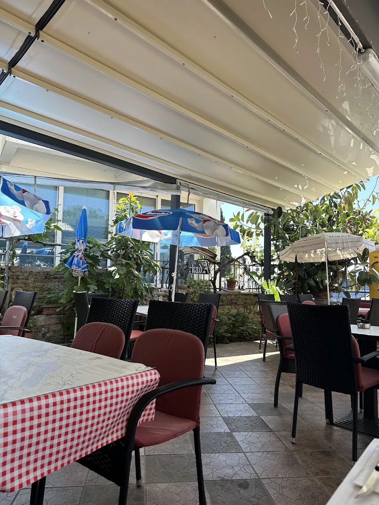

Naša priča
Generacijama uz
Generacijama uz
istu obalu
Arkada je ime dobila po kamenim lukovima koji od pamtivijeka oblikuju biogradsku rivu. Pod tim istim svodovima naša obitelj već više od dvadeset godina dočekuje goste — s ribom, gradelom i osmijehom koji se ne uči.
Biograd na Moru, nekadašnji kraljevski grad, daje nam more, kamen i mir. Mi tome dodajemo recepte naslijeđene od baka i poštovanje prema svakoj namirnici koju stavimo na tanjur.
— Obitelj Arkada